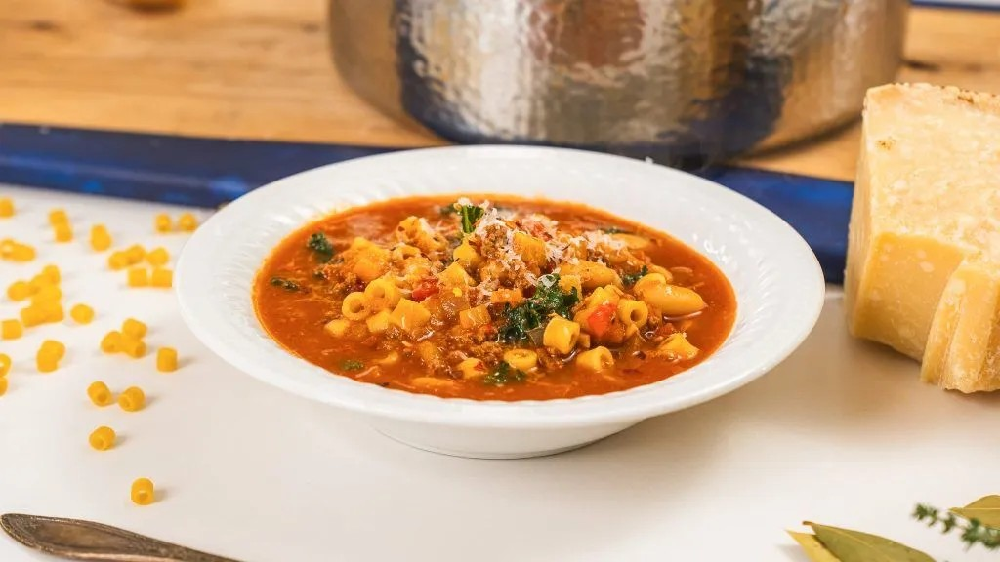
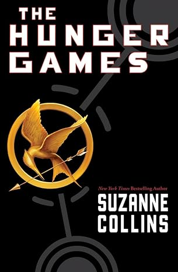
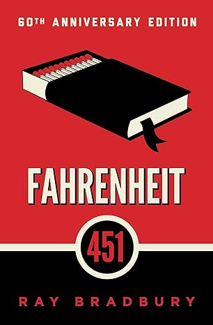
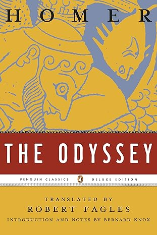

Samuel Farrington
Trip Section
Last summer I visited Puerto Rico for the first time with my family. On our first night we
stopped into a restaurant to grab a bite to eat and ended up starring in a commercial for
the restaurant! There was a camera crew there that day and they saw us enjoying the food.
It was so fun and such a great story! We spent a day driving into the very scenic El Yunque
National Forest located in the Luquillo Mountains where we saw waterfalls and did some hiking.
As an excursion we decided to take a catamaran adventure to snorkel and visit private beaches.
During the snorkeling adventure a shark swam right below us, which has sparked my interest in
scuba diving/free diving. From start to finish it was truly an unforgettable trip and I wish
I could do it all over again.
Favorite Pet Names:
- Penelope the Dog
- Luna the Cat
- Oreo the Cat
Favorite Resturant:
My favorite resturant is Bayside American Cafe, located in Portland, ME. Not only is it
one of my favorite places to eat, it is also the restaurant where I fell in love with my
girlfriend. After school ended in high school, her and I would drive down and spend hours
talking over cinnamon bun pancakes. As silly as it sounds, nine years later those pancakes
are still my favorite.
Favorite Food:

My recent obsession is trying new recipes I find on social media. Right now I am super
excited about a recipe I found- Stanley Tucci inspired Pasta Fagioli Soup. It is the
perfect recipe for a snowy winter day. It is warm, comforting and hearty, my family cannot
get enough of it.
Favorite Books:
| Name |
Image |
Author |
Summary |
| The Alchemist |
 |
Paulo Coelho |
A shepherd named Santiago begins a journey in search of treasure. Through his hardships
and introspection, Santiago discovers that the real treasure is how he changed on the
journey and his newfound perspective on life. |
| The Hunger Games |
 |
Suzanne Collins |
In a dystopian reality, Katniss Evergreen is one of 26 from the 13 districts surrounding
the Capital forced into a televised fight to the death. During this event, Katniss becomes
a symbol of rebellion against a ruthless government. |
| Farenheight 451 |
 |
Ray Bradbury |
A dystopian novel set in the future where books are burned and indenpendent thought is dangerous.
A fireman, named Guy Montag meets a free thinking woman, Clarisse, and dangerously begins to
question the world in search of the truth. |
| The Odyssey |
 |
Homer |
After the Trojan war, Odysseus embarks on a journey to return home. Odysseus overcomes
monsters, gods, and temptations while struggling to return home, where he has to fight to
reclaim his kingdom and family. |
Guest Book: